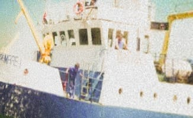

Overview
A cropped photograph of a vessel. Recover its , its departure port, the date and UTC time it started fishing, and the port-to-fishing-ground distance. The challenge ran in September 2026 and says "three years ago, during this same month", so the window is September 2023.

The only handholds are the partial lettering on the bow and the hull profile.
Identifying the vessel
A reverse image search points to the Romanian research trawler STEAUA DE MARE 1. Other photos confirm it on distinctive features: dark-blue hull with white superstructure, five wheelhouse windows, a blue external stairway, yellow deck cranes, matching porthole layout. The ShipSpotting entry gives:
Name: STEAUA DE MARE 1
IMO: 8008709
MMSI: 264900119Reconstructing the voyage
Search MMSI 264900119 on Global Fishing Watch and filter to September 2023.
There is one voyage: departure from Constanta, Romania on 21 September 2023.
The first fishing event on that voyage:
start: 2023-09-21T07:17:06Z
event marker: 44.0637, 28.9227Constanta port-visit marker: 44.1101, 28.7383.
Pitfall
The first fishing event overlaps the tail of Global Fishing Watch's wide
port-visit window for Constanta. Skip it as "still in port" and you take the
next event instead, which gives the wrong time of 01:13 PM. The correct answer
is the earlier 07:17.
Distance
Great-circle distance between the two markers by the formula, Earth radius 6371 km:
Constanta port: 44.1101, 28.7383
Fishing marker: 44.0637, 28.9227
distance: 15.6056 km -> 15.6The timestamp is already UTC; 07:17 in 12-hour form is 07:17 AM.
Flag
TFCCTF{264900119_constanta_21.09.2023_07:17_AM_15.6}